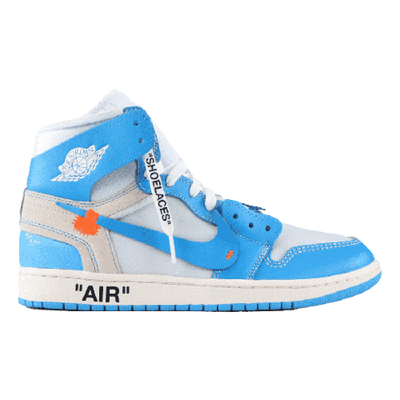

Les Collaborations
Off-White x Nike
La “Air Max”, la “Air Jordan”, la “Blazer”, la “VaporMax”… Au total, 10 des modèles emblématiques de Nike ont été revisités par Virgil Abloh à l’occasion du projet “The Ten”. Pour le fondateur d’Off-White, fan inconditionnel de Michael Jordan, tout est parti des années 1990. En découle une série de sneakers, articulées autour de deux thématiques – “Revealing” et “Ghosting” –, fusionnant l’approche avant-gardiste de Virgil Abloh et ses connaissances pointues du design.